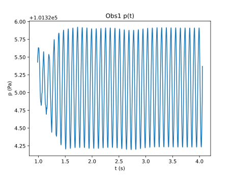
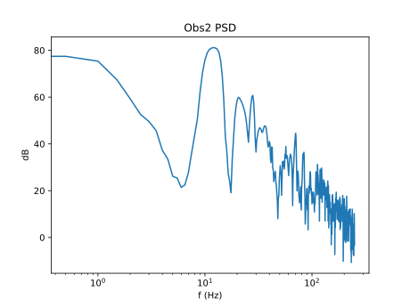

Tutorial 3a: FWH Solver¶
A Ffowcs-Williams Hawkings (FWH) solver, which is used for prediction of farfield noise, is included in the zCFD distribution. In this section, we will use the zCFD FWH solver to calculate the sound experienced by two ‘observer microphones’ as a result of the aerodynamic noise generated by the flow around the cylinder.
In order to use an FWH solver to predict noise at observer microphones, we will first rerun the CFD simulation from Tutorial 3 with some additional terms to record the flow variables on an ‘FWH surface’ in the near-field, noise generating region. We then use the FWH solver to propagate the noise from the near-field FWH surface to the observer microphones. For more detail on the FWH solver, see here.
Running zCFD with FWH output¶
The flow we’re going to be running the FWH solver on is the shedding cylinder. To get the required inputs to our FWH solver, we need to define an FWH surface, and collect data on this surface during a CFD simulation.
The files required for the fwh tutorial can be downloaded here. In the zip file there’s a FWH surface definition file, called fwh_surface1.stl. Given we’ve already run the cylinder case in Tutorial 3, we can view the FWH surface in Paraview alongside the cylinder CFD volume data (see here), as below. You may find the surface easier to see if you set the view style to be Feature Edges instead of Surface for the FWH surface, and increase the Line Width in the Geometry Representation.
The FWH surface encloses the noise generating near-field region, but does not intersect the wake, in order to avoid spurious pseudo-sound p[1, 2] .
There’s also a prepared control dictionary, cylinder_fwh.py. This is identical to tutorials 3’s cylinder.py apart from the output section, which is detailed below.
"write output": {
"format": "vtk",
"surface variables": ["V", "p", "T", "rho", "cp"],
"volume variables": ["V", "p", "T", "rho", "m", "cp"],
"fwh interpolate": ["fwh_surface1.stl"],
"frequency": {
"fwh interpolate": 1,
"volume data": 1000,
"surface data": 1000,
},
},
In this case, we have chosen to output fwh interpolate data every single timestep, using the fwh_surface1.stl FWH surface definition file. Volume and surface data is much less frequent, since we already have all this data from when we ran cylinder.py above.
For the FWH tutorial we have also updated the ‘time marching’ section to run the simulation for 4 seconds, rather than 1.2. We run the CFD simulation in the normal way, using the command below.
run_zcfd -m cylinder.h5 -c cylinder_fwh.py
When we’ve run the CFD simulation of the cylinder, we should be able to see the FWH interpolated data in ‘cylinder_fwh_P1_OUTPUT/ACOUSTIC_DATA/fwh_surface1_FWHData.h5’.
FWH Observer and surface motions¶
We’re going to use the FWH solver to calculate noise at two observer microphones - ‘Obs1’ and ‘Obs2’ (see Fig 1). ‘Obs1’ is an observer that is a fixed distance away from the cylinder - if we consider the cylinder in a wind tunnel, we could consider ‘Obs1’ as a microphone attached to the wind tunnel wall. ‘Obs2’ is different, and actually flies through the air at the same speed as the freestream air.
FWH Observer and surface motions - CFD frame of reference¶
When the FWH equations are derived, we make an important assumption - that of a ‘quiescent medium’ (i.e. still air, with a free-stream velocity of zero). Clearly, with a freestream velocity of (0,66.8,0), the flow in our CFD simulation does not satisfy this condition. In order to use the FWH solver, we therefore have to perform a co-ordinate transformation, as in Fig 2. In this ‘quiescent medium’ co-ordinate system, the cylinder and ‘Obs1’ are ‘flying’ through the air. In this co-ordinate system, we can also see that ‘Obs2’ represents a microphone fixed to the ground, as the cylinder flies overhead.
FWH Observer and surface motions - FWH (quiescent medium) frame of reference¶
Setting up the FWH solver inputs¶
Now that we know the motions of our observers and surface, we can run the FWH solver. The python code required to run the FWH solver is in the file ‘run_fwh_solver.py’, and also written out below. We define the surfaces, observers and the solver settings, then use fwh.solve() to actually run the FWH solver.
from solvers import fwh, motion
import json
import math
# FWH surface motion
c = math.sqrt(1.4 * 277.7777 * 287)
v_surf = [0, - 0.2 * c, 0] # = [0,-66.8,0]
t0 = 0.002 #t at first FWH data output
surfaceCentrePoint = motion.ConstantVelocityPoint([0.0, 0.0, 0.0], v_surf)
surfaceMotion = motion.NonrotatingSurface(surfaceCentrePoint)
# obs1 motion - [0,0,20] above cylinder centre
obs1_CFD_frame_posn = [0.25,0,20]
obs1_0time_posn = []
for i in range(3):
obs1_0time_posn.append( obs1_CFD_frame_posn[i] - t0 * v_surf[i] )
obs1Motion = motion.ConstantVelocityPoint(obs1_0time_posn, v_surf)
# obs2 motion - stationary, intersects with obs1 at t=2.5
obs2_posn = []
for i in range(3):
obs2_posn.append( obs1_0time_posn[i] + 2.5* v_surf[i])
obs2Motion = motion.StationaryPoint(obs2_posn)
solverSettings = {
"c": c,
"dt": 0.002,
"rho0": 101325.0 / (277.7777 * 287),
"p0": 101325.0,
}
surfaces = {
"surf1": {
"motion": surfaceMotion,
"fileName": "./cylinder_fwh_P1_OUTPUT/ACOUSTIC_DATA/fwh_surface1_FWHData.h5",
}
}
observers = {"Obs1": obs1Motion, "Obs2": obs2Motion}
pOut, tOut = fwh.solve(surfaces, observers, solverSettings)
dataForJson = {"p": pOut, "t": tOut}
with open("./FWH_data.json","w") as f:
json.dump(dataForJson,f)
More details on FWH solver setup can be found here, but the most important concept is that we use ‘motion classes’ to define observer and surface motions. The available observer motions are ‘OriginPoint’, ‘StationaryPoint’ and ‘ConstantVelocityPoint’. The available surface motions (which rely on an observer motion to define the motion of their centre) are ‘NonrotatingSurface’ and ‘RotatingSurface’.
The velocities and fluid properties used in the FWH simulation are taken from the ‘cylinder.py’ zCFD control file. solverSettings['dt'] has been set to be the same as the timestep between outputs in the FWH surface data (0.002 seconds, see above).
In general, we can consider the motion of a point on an FWH surface to be defined by \(\mathbf{x}(t)=\mathbf{x}_0+ \mathbf{V}_{surf} (t-t_0)\) in the FWH co-ordinate frame. \(\mathbf{V}_{surf}\) is defined by the user in the surface motion class (called surfaceMotion above), \(\mathbf{x}_0\) is the position defined by the FWH surface definition file (‘fwh_surface1.stl’, see above), and \(t_0\) is the simulation time at which the solver first outputted the FWH data. In our case, \(t_0\) = 0.002 seconds (see Output).
The centre of the cylinder in the CFD mesh is at (0.25,0,0), and we want Obs1 to always be (0,0,20) metres away from the cylinder centre during the FWH simulation. Since the cylinder ‘travels with’ the FWH surface (see Fig. 2), we can therefore say that the motion of the cylinder centre in the FWH co-ordinate frame is \(\mathbf{x}(t)=(0.25,0,0) + \mathbf{V}_{surf} (t-t_0) = \left( (0.25,0,0) - 0.002 \ \mathbf{V}_{surf} \right) + \mathbf{V}_{surf} t\). We therefore set the motion of Obs1 to be \(\mathbf{x}(t)= \left( (0.25,0,20) - 0.002 \ \mathbf{V}_{surf} \right) + \mathbf{V}_{surf} t\). We set Obs2 to be stationary in the FWH reference frame, and to be coincident with Obs1 at t=2.5. We save the outputs to a json file called FWH_data.json.
Running the FWH solver¶
The python code above is replicated in ‘run_fwh_solver.py’. To run the FWH solver, we simply run the command below from within the zCFD command-line environment. You may need to change the surfaces["surf1"]["fileName"] parameter depending on how many ranks you used in your zCFD run.
python3 run_fwh_solver.py
This will output various information to the screen, including the ‘valid min and max times’ for each surface / observer combination.
The valid min and max times denote the time window during which an observer receives data from all points on the FWH surface. A pressure signal emitted from a point on the FWH surface at time t takes r/c seconds to arrive at an observer, where r is the distance from the surface point to observer and c is the speed of sound. Therefore the valid observer time window will always be later than the FWH surface output time window (in our case, 0.002:1.2 seconds) due to the distance from the FWH surface to the observer. The valid observer time window will be narrower if the FWH surface is large, since the larger the surface the larger the time delay between signals from different points on the surface reaching the observer becomes.
Post-processing¶
The jupyter notebook postprocess_fwh_data.ipynb from the zip file can be used to post-process the FWH data.
Obs1 moves through the FWH medium at a constant displacement from the cylinder centre (see Fig 1). We see from our post-processing that the noise experienced by Obs1 is dominated by a constant 10 Hz component, which is the shedding frequency of the cylinder. Various harmonics of the 10 Hz signal are present in the power spectral density plot for Obs1.

During the FWH simulation, the cylinder gets closer to Obs2 from 0 to 2.5 seconds, before getting further away from Obs2 from 2.5 seconds onwards. We can see in the Obs2 p(t) plot that the peaks are closer together from 0 to 2.5 seconds than they are after 2.5 seconds. This is due to Doppler shift. We can also see the effect of Doppler shift in the power spectral density, which has a more rounded 10 Hz peak than that seen in Obs1.
postprocess_fwh_data.ipynb also creates .wav files, which allow you to listen to the sound experienced by Obs1 and Obs2.
Extensions¶
To become more comfortable with the FWH solver, various extensions to this exercise are possible. Here are some suggestions.
Re-run the zCFD solver, but this time also extract FWH data on the cylinder wall. Run the FWH solver (using the wall data as an impermeable FWH surface) and compare the results to those achieved using the fwh_surface1 permeable FWH surface.
Re-run the zCFD solver, but this time also extract FWH data on the fwh_surface2.stl and fwh_surface3.stl surfaces. These are like fwh_surface1.stl but slightly larger. Run the FWH solver with these surfaces and investigate the effect of using different surfaces on the FWH results.
Add extra observers of your choice to the FWH solver.
Note
Since the cylinder CFD simulation is ‘2.5D’ (i.e. the mesh only has a single cell in the x direction), the distance scaling of p(t) at observers will be non-physical.
Citations¶
Mitchell, B., Lele, S., & Moin, P. (1999). Direct computation of the sound generated by vortex pairing in an axisymmetric jet. Journal of Fluid Mechanics, 383, 113-142. 10.1017/S0022112099003869
Ricciardi, T. R. , Wolf W. R, & Spalart P. R. (2022). On the Application of Incomplete Ffowcs Williams and Hawkings Surfaces for Aeroacoustic Predictions. AIAA Journal, 60:3, 1971-1977. 10.2514/1.J061285

{kind=link}
{kind=link}
{kind=link}
{kind=link}
{kind=link}
{kind=link}